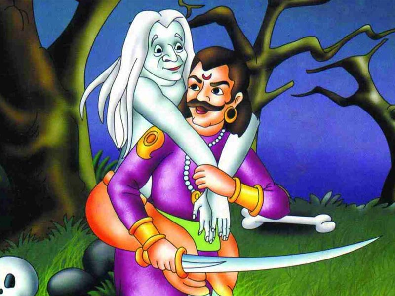

8.રાજા ચંદ્રસેન અને યુવાન સત્યશીલ |
તે ઘણા સમય પહેલાની વાત છે જ્યારે સમુદ્ર કિનારે વસેલું એક શહેર તામ્રલીપી પર રાજા ચંદ્રસેનનું શાસન હતું. હજારો લોકો રાજાને મળવા આતુર હતા. એમાંનો એક યુવાન સત્યશીલ હતો. સત્યશીલ કામની શોધમાં હતો, તેથી દરરોજ તે રાજા ચંદ્રસેનના મહેલમાં તેને મળવા પહોંચતો. દુર્ભાગ્યે, દર વખતે દરબારીઓ દ્વારા તેને દૂર મોકલવામાં આવ્યો. આ ઘટનામાં ઘણો સમય વીતી ગયો, પરંતુ છોકરાએ હિંમત હારી નહીં. રાજમહેલની સાથે સાથે તે દરેક જગ્યાએ પહોંચતા જ્યાં રાજાની ગાડીઓ જતી.
એક દિવસ રાજા પ્રવાસ કરીને પોતાના સૈનિકો સાથે મહેલમાં પાછા ફરી રહ્યા હતા. કાળઝાળ ગરમીને કારણે રાજાને ખૂબ તરસ લાગી. સૈનિકો અહીં અને ત્યાં પાણી શોધવાનું શરૂ કરે છે, પરંતુ કોઈ સફળ થતું નથી. ત્યારે રાજા સત્યશીલને રસ્તામાં ઊભેલા જુએ છે. યુવકને જોઈને રાજા પૂછે છે કે તમારી પાસે પાણી છે?
સત્યશીલ તરત જ રાજાને પાણી આપે છે અને મીઠાં ફળ પણ ખવડાવે છે. રાજા તેના પર ખૂબ જ પ્રસન્ન થાય છે અને કહે છે - 'હું તમને કંઈક ભેટ આપવા માંગુ છું, મને કહો કે તમને શું જોઈએ છે?'
|
|
ભૂપતિ ચંદ્રસેન પ્રશ્ન પૂછતા જ સત્યશીલ તરત જ કહે છે કે મહારાજ, હું ઘણા સમયથી કામ શોધી રહ્યો છું, જો તમે મને કોઈ કામ આપો તો તમારી કૃપા થશે. આ સાંભળીને, રાજા તરત જ તેને તેના દરબારમાં નોકરી આપે છે અને કહે છે કે તે તેના દ્વારા આપેલા પાણીના ઉપકારને જીવનભર યાદ રાખશે.
સમય વીતતો ગયો અને તેની પ્રતિભાને કારણે તે યુવક રાજાની ખૂબ નજીક બની ગયો. એક દિવસ ભૂપતિ ચંદ્રસેન સત્યશીલને કહે છે - 'અમારા નગર તામ્રલિપીમાં બેરોજગારી ઘણી વધી ગઈ છે, આપણે તેના વિશે કંઈક કરવું જોઈએ'. આ સાંભળીને યુવક કહે - 'મહારાજ, તમે હુકમ કરો.'
રાજા કહે છે - 'અમારી પાસે એક ટાપુ છે, જે ખૂબ જ લીલોછમ છે. જો ત્યાં સંશોધન કરવામાં આવે તો કામની કેટલીક તકો મળી શકે છે.' આ સાંભળીને સત્યશીલ 'જી મહારાજ' કહીને દ્વીપ તરફ રવાના થયા.
સત્યશીલ સમુદ્ર માર્ગે ટાપુ પર પહોંચતા જ તેને પાણીમાં તરતો ધ્વજ દેખાય છે. જલદી તે ધ્વજ જુએ છે, તે હિંમત ભેગી કરે છે અને પાણીમાં કૂદી પડે છે. જલદી તે પાણીમાં કૂદી પડે છે, તે યુવક સદ્ગુણી ટાપુની રાજકુમારી પાસે પહોંચે છે, જ્યાં તે તેના મિત્રો અને દાસીઓ સાથે ગીત ગાતી હોય છે. યુવક પોતાનો પરિચય રાજકુમારી સાથે કરાવે છે. થોડીવાર વાત કર્યા પછી, રાજકુમારી સત્યશીલને રાત્રિભોજન માટે આમંત્રણ આપે છે અને જમતા પહેલા નજીકના તળાવમાં સ્નાન કરવા કહે છે. સત્યશીલ તળાવમાં સ્નાન કરવા માટે ઉતરતાની સાથે જ તે તામ્રલિપી મહેલના દરબારમાં પહોંચે છે
|  |
સભામાં સત્યશીલને જોઈને રાજા ચંદ્રસેન આશ્ચર્યચકિત થઈ ગયા. તે તેને પૂછે છે - ‘અરે, તમે અહીં કેવી રીતે આવ્યા? સત્યશીલ રાજાને સમગ્ર ઘટના વિશે કહે છે. બધું જાણ્યા પછી રાજા પણ એ ટાપુ પર જવાનું નક્કી કરે છે. ત્યાં પહોંચ્યા પછી ભૂપતિ ચંદ્રસેન તે ટાપુ જીતી લે છે. આવું થતાં જ રાજકુમારી રાજા ચંદ્રસેનને તે ટાપુનો રાજા જાહેર કરે છે. ટાપુને જીતવાની ઉજવણીમાં, રાજા ત્યાંની પૂર્વ રાજકુમારી અને સત્યશીલના લગ્ન ગોઠવે છે. આ રીતે રાજા ચંદ્રસેન સત્યશીલના પાણીના ઉપકારનો બદલો આપે છે.
આવી વાર્તા કહ્યા પછી બેતાલ મૌન થઈ જાય છે અને વિક્રમને પૂછે છે કે રાજા ચંદ્રસેન અને સત્વશીલ વચ્ચે સૌથી મજબૂત કોણ હતું? પ્રશ્ન સાંભળતા જ વિક્રમે કહ્યું સત્યશીલ વધુ શક્તિશાળી હતો. બેતાલ પૂછે છે - કેવી રીતે?
પછી વિક્રમ કહે છે કે સત્યશીલ, કંઈપણ વિચાર્યા વિના, ટાપુની નજીક ધ્વજ જોયા પછી પાણીમાં કૂદી પડે છે. જો તે ત્યાં કૂદી પડતો તો તે કોઈપણ પ્રકારના જોખમનો સામનો કરી શકતો હતો, જ્યારે રાજા જાણતો હતો કે પાણીમાં કોઈ જોખમ નથી. પ્રશ્નનો જવાબ મળતાની સાથે જ બેતાલ રાજા વિક્રમના ખભા પરથી ઊડીને ગાઢ જંગલમાં એક ઝાડ પર બેસીને પાછો જાય છે.
વ્યક્તિએ ક્યારેય હિંમત ન હારવી જોઈએ અને સતત કામ કરતા રહેવું જોઈએ